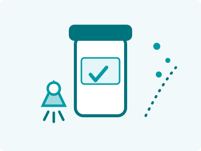

Guía · Marca propiaGuide · Private label

No necesitas una planta, un laboratorio ni un equipo técnico para tener tu propia marca de suplementos. Necesitas una buena idea, un canal de venta y un maquilador que haga el resto. Estos son los 6 pasos del camino, tal como lo recorren las marcas que fabricamos todos los días.
You don't need a plant, a lab or a technical team to own a supplement brand. You need a good idea, a sales channel and a manufacturer that does the rest. These are the 6 steps of the journey, exactly as the brands we manufacture walk it every day.
¿Para quién es y qué problema resuelve? "Colágeno para mujeres 40+", "pre-entreno sin cafeína", "multivitamínico infantil". Entre más específico el nicho, más fácil vender — y más fácil formular.
Who is it for and what problem does it solve? "Collagen for women 40+", "caffeine-free pre-workout", "kids' multivitamin". The more specific the niche, the easier it is to sell — and to formulate.
Aquí entra tu maquilador: selecciona activos con respaldo, define dosis eficaces (no simbólicas) y elige el formato correcto para tu canal. Si ya tienes una fórmula de referencia, se evalúa y optimiza en costo y estabilidad.
This is where your manufacturer comes in: selecting evidence-backed actives, defining effective doses (not token ones) and choosing the right format for your channel. If you already have a reference formula, it gets evaluated and optimized for cost and stability.
Pruebas sabor, disolución, presentación. Se ajusta lo necesario hasta que el producto sea exactamente el que imaginaste. Nunca firmes producción sin haber tenido el producto en la mano.
You test taste, solubility, presentation. Adjustments are made until the product is exactly what you imagined. Never sign off on production without holding the product in your hand.
Tu etiqueta debe cumplir la normativa mexicana de suplementos: denominación correcta, declaraciones permitidas, información nutrimental. Un maquilador serio revisa tu etiqueta antes de imprimir — corregir en papel cuesta centavos; corregir en anaquel cuesta el lote.
Your label must comply with Mexican supplement regulations: correct product denomination, allowed claims, nutritional information. A serious manufacturer reviews your label before printing — fixing it on paper costs cents; fixing it on the shelf costs the batch.
Tu lote se fabrica con materias primas verificadas, controles en proceso, trazabilidad documentada y análisis de laboratorio antes de liberarse. Este paso es el que protege tu marca a largo plazo — aquí te explicamos por qué.
Your batch is manufactured with verified raw materials, in-process controls, documented traceability and lab testing before release. This is the step that protects your brand long-term — here's why.
Con producto en mano, tu trabajo es la marca: contenido, canal de venta, servicio. Los datos de tu primer lote (qué sabor rota, qué presentación piden) alimentan el segundo — y ahí es donde el costo unitario empieza a mejorar con el volumen.
Product in hand, your job is the brand: content, sales channel, service. Data from your first batch (which flavor moves, which size customers ask for) feeds the second — and that's where unit cost starts improving with volume.
| Tu marca | Your brand | Tu maquilador | Your manufacturer |
|---|---|---|---|
| Idea, nicho y nombre | Idea, niche and name | Fórmula con sustento técnico | Evidence-backed formula |
| Diseño de marca y etiqueta | Brand and label design | Revisión regulatoria de etiqueta | Regulatory label review |
| Canal de venta y marketing | Sales channel and marketing | Producción NOM-251 y análisis por lote | NOM-251 production and per-batch testing |
| Servicio al cliente | Customer service | Trazabilidad y documentación | Traceability and documentation |
En Jisa Pharma recorremos este camino todos los días con nuestras propias marcas, Natural Wisdom y Holistic Beauty. Cuéntanos tu idea y te decimos exactamente cómo convertirla en producto.
At Jisa Pharma we walk this path every day with our own brands, Natural Wisdom and Holistic Beauty. Tell us your idea and we'll show you exactly how to turn it into a product.
Cuéntanos tu idea y recibe una cotización en 3-5 días hábiles.
Tell us your idea and receive a quote within 3-5 business days.
Cotizar mi proyectoRequest my quote